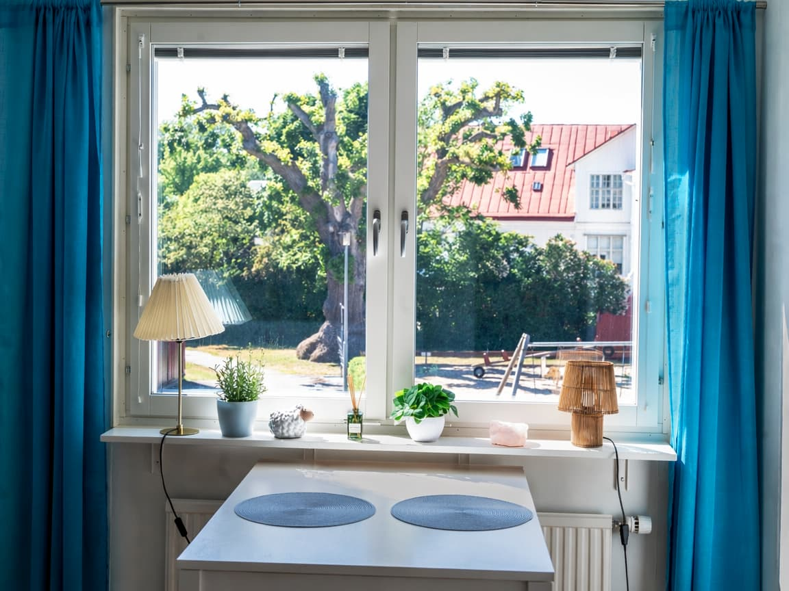
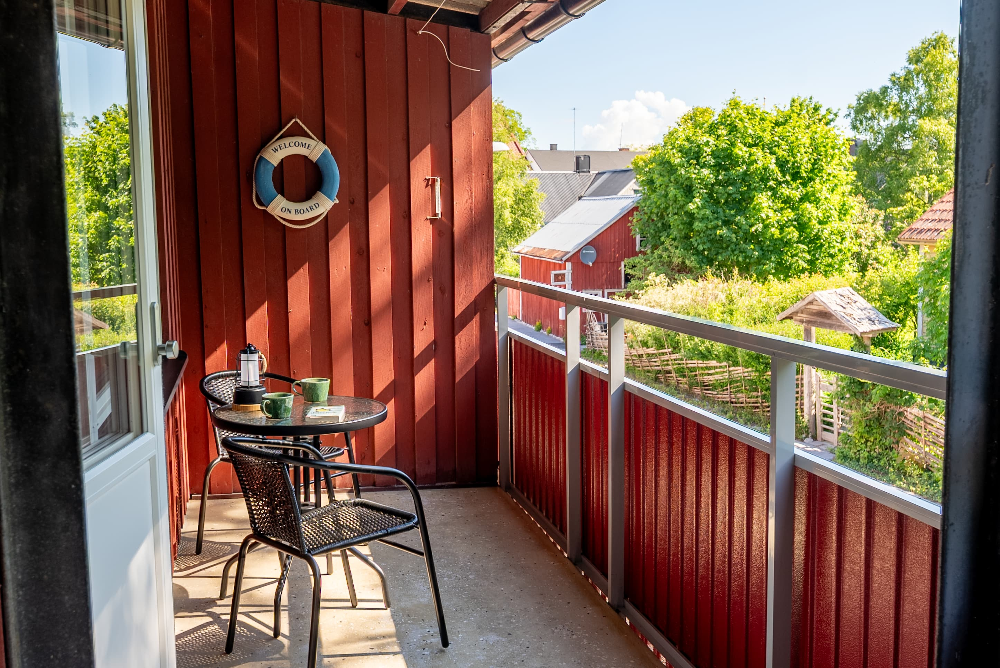
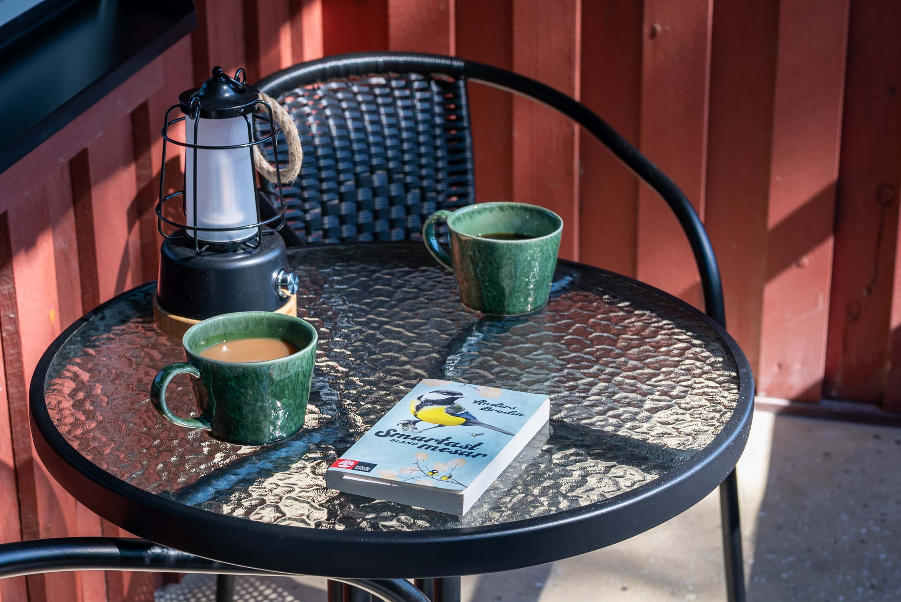
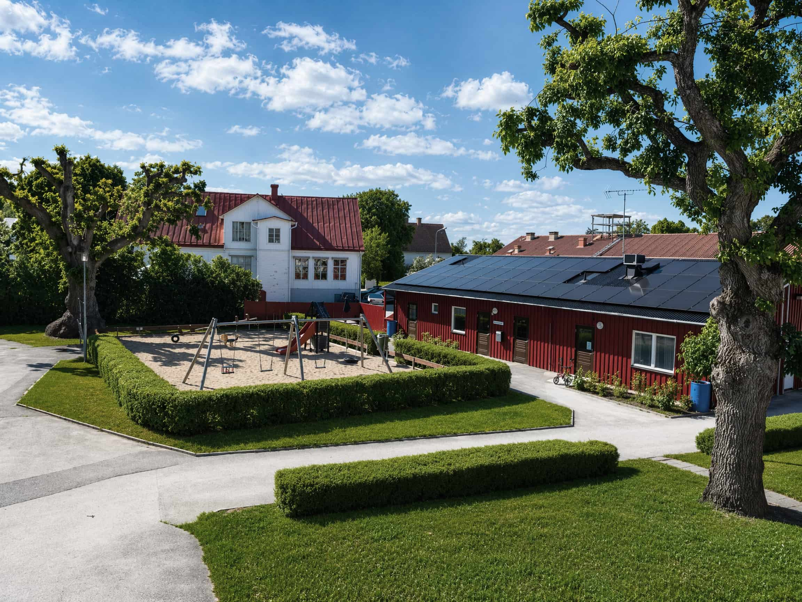
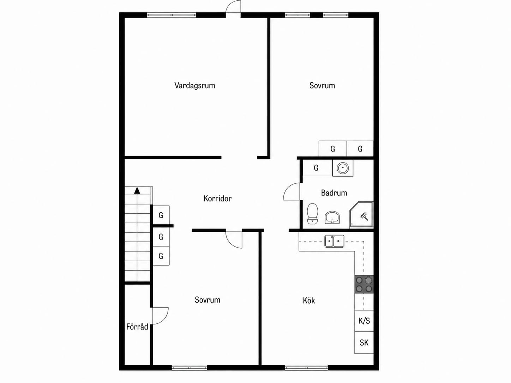
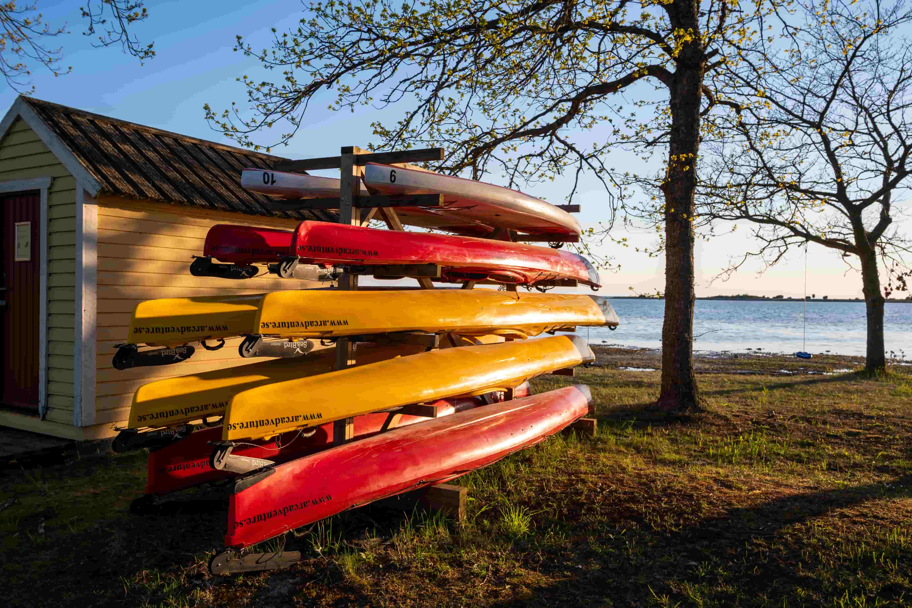

Söker rätt ägare · Bostadsrätt · Gotland
Renoverad och inflyttningsklar lägenhet i hjärtat av Klintehamn. Stor balkong mot grönska, egen entré och minimal insyn. Ca 400 meter till havet.
"Det här är egentligen min drömlägenhet. Yoga på balkongen, kaffe med utsikt mot gamla träd, kreativa stunder i köket, lägenhetens rymd och fri utsikt kändes som 'an ocean of space' gentemot mina behov. Nu söker den sin nya ägare."
Säljaren berättar





Om lägenheten
Lägenheten nås via egen entré och välkomnar dig med en generös hall och ett genomtänkt flöde mellan rummen. Vardagsrummet har holländsk parkett och öppnar upp mot den stora balkongen — med utsikt mot gamla träd och villatomter, avskilt och stilla.
Den stora balkongen är en av lägenhetens verkliga höjdpunkter: förmiddagssol, behaglig svalka på sommaren och en känsla av att vara mitt i naturen.
Köket är rymligt med plats för matgrupp vid fönstret. Lägenheten har två välplanerade sovrum, varav ett med walk-in-closet. Bostaden är välskött och inflyttningsklar — perfekt för dig som vill flytta in och börja njuta från första dagen.
Klintehamn · Gotland
Föreställ dig att vakna till havsluften, ha natur, service och kustliv bara några minuter bort. I hjärtat av Klintehamn möts du av generösa ytor och en flexibel planlösning som enkelt kan anpassas efter livets olika skeden.
Ca 400 m till hav och badbrygga. Gångavstånd till mataffär, caféer och restauranger. Buss till Visby på 3 minuters promenad. Ca 25–30 min med bil till Visby.
Oavsett om du söker ett permanent hem, ett bekvämt boende för distansarbete eller en lugn plats nära havet — här erbjuds en livsstil som många drömmer om.
Klintehamn





"Samma hav. Mer bostad. Eget tempo"
Klintehamn · Gotland
Boka visning
Boka en ledig tid för onlinevisning eller fysisk visning direkt här på sidan.
Gemensamma visningar planeras efter sommaren.
Flexibel tillträdesdag.
Särskilda önskemål om tid?
SMS:a gärna på 070-045 82 32.
Kontakt
För frågor om föreningen, bostadens ekonomi, budgivning eller övriga objektsuppgifter hänvisas du till ansvarig mäklare Joacim di Corsi, Fastighetsbyrån.
Fullständig objektsinformation finns på Hemnet.
Fakta